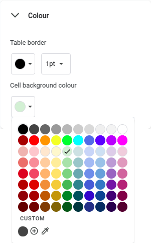
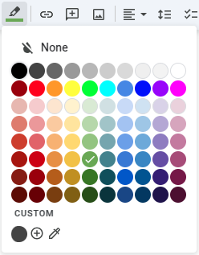

About CLaaT (Codelabs as a Thing)
Code(what?) ... the concept of codelabs is a learning by doing approach to education and tutorials.
Rather than have your audience lose interest by presenting them with a long-winded "how to" or a tedious "wiki page", you can format an easy-to-follow guide in the form of a step-by-step codelab.
Developed and maintained by a small group of dedicated Googlers (Google employees), the CLaaT (Codelabs as a Thing) project is open source, and available for anyone to use.
Note: this format is not restricted to just coding! You could author a codelab to represent any type of tutorial. It may be related to Car Maintenance, Home Improvement, Operating Systems, PC Upgrades ... the possibilities are endless.
How do I create my own Codelabs?
There are actually two different formats supported: .doc (Google Docs) and .md (Markdown Syntax). However, we will only be discussing the Google Docs version ... please refer to my other Codelabs for the Markdown version.
* Google Documents: the content for this type of codelab-authoring can be written in Google Docs, using some simple formatting conventions. Google docs files can be stored in your Google Drive account, but not hosted there ... refer to the Conclusion/Hosting section for more on that topic.
Google Docs has the advantage of supporting collaboration, so it would be great for a team
* Markdown Language: you can also author codelabs using markdown syntax. Mark(what?) ... Wikipedia describes Markdown as a lightweight markup language for creating formatted text using a plain-text editor.
Markdown has the advantage of being stored locally, so it can be edited even when offline
Target computers for Software
Linux
The following steps include instructions for Linux computers, and for Linux in a container, i.e. the Linux development environment on a Chromebook, or Windows Subsystem for Linux on a Windows PC. If you're using a fully-fledged Linux distribution installed on your computer, then skip to the Go installation, just below ... however, if you're using a Chromebook or a Windows PC, please read on:
Chromebook
If you're using a Chromebook, never fear because the installation of all dependencies has been tested by the author of this tutorial, by following the Linux instructions in this guide, within a Linux terminal (Debian Bookworm) on ChromeOS. There are some caveats however, which will be outlined (if applicable) as we proceed ... if you have not yet installed the Linux development environment on your Chromebook, please see my other Guides on how to achieve this (although, read the next two paragraphs before rushing off).
By installing all of these dependencies in your Linux container, you may get a message from ChromeOS saying Linux is low on disk space ... in that popup, there should be a button for Resize Linux disk. About two-thirds of the way down the Linux development environment settings page, next to Disk size, click the Change button. In there, drag the slider to the right to increase the allocated disk space to at least 6.0 GB.
Also worth noting is that nano is not installed by default ... if you want to use nano as the plain-text editor for system files (e.g. .bashrc), please install it using the following commands:
Start by updating your actual Debian system (recommended):
sudo apt update && sudo apt upgradeWhen you're ready, install nano using the following command:
sudo apt install -y nanoWindows
If you're using a Windows desktop or laptop, then you'll need to have WSL2 installed, and a distro already set up. If you need help with that, please see my other Guides on how to install Windows Subsystem for Linux.
Go (with Curl) installation
The following software is required on your local computer, to "build" the codelab's output files (HTML by default):
- Go (golang). Requires curl for install
- CLaaT (codelabs command-line tool)
Curl is a command-line tool for transferring data with URL syntax, supporting many web protocols ... it's required to install Go in the next step, as well as Node.js (if applicable).
To check for curl on your system, run the following command in your terminal:
which curl
If you receive output showing the full-path to curl, then skip to the next step.
However, if there is no output, install curl from your distro's repos, as shown:
Start by updating your repos ...
(if you haven't done so already):
sudo apt updateThen install the curl program:
sudo apt install curlNow you can install Go
- Start by downloading the latest version from the official Go website
- Then follow their installation instructions using this separate link
(remember to select the tab for Linux installation instructions)
CLaaT tool installation
The claat executable program converts your input file (e.g. your exercises codelab file) into the actual codelab format, which is HTML by default.
Assuming you have Go installed now, the command below will result in claat having the full path: $HOME/go/bin/claat ... note that executable permissions will already be set, using this method
go install github.com/googlecodelabs/tools/claat@latest
Or, download directly from the Google Codelabs GitHub page. No matter which O/S you are using for your bare-metal machine, be sure to select the Linux version, most likely claat-linux-amd64
chmod u+x /path-to/claat
Checking the path where CLaaT was installed
ls $HOME/go/bin
If all went well, you should see one file listed: claat
Now edit your .bashrc file and append the following:
export PATH=$PATH:$HOME/go/bin
Close then reopen any terminal sessions before running claat
(alternatively, run the following command to reload .bashrc)
source ~/.bashrcThen check for the successful installation of claat
claat version
or
claat helpCheck the path where Go was installed
ls /usr/local/go/bin
If all is well, you should see two files listed: go and gofmt
Now edit your .bashrc file and append the following:
export PATH=$PATH:/usr/local/go/bin
The start of your codelab.doc file needs to have certain metadata, to enable a codelab to function correctly. Some of this metadata is required and some is optional, as follows:
Required metadata
Authors: your_name_here
At least one name, separated by commas
Category: android, kotlin
At least one category, separated by commas
Feedback Link: https://example.com
The hyperlink to open when "Report a mistake" is clicked at bottom-left
URL: how-to-write-a-codelab
Must be unique within your codelabs directory. This is also
used as the folder name where exported files will be created
Status: Published
Valid options: Draft, Published, Deprecated, Hidden
Optional metadata
Analytics Account: project-id-123
This allows you to specify a custom Google Analytics ID for your codelab
Environment: Web
A tag that allows CLaaT to output some codelabs for a specific environment.
All codelabs default to the "Web" environment, but given some hardware constraints, you might only want to generate them for a "Kiosk" environment, where you know people will have the right hardware.
You can also use this to target specific events, for instance: Web, polymer-summit
Summary: Create a Codelab in Google Docs
A short summary of the codelab that will be shown in the codelab browser UI
Tags: compose, coroutines
Add relevant tags to make your codelab easy to find
Metadata and Title
In the previous section, you learned about codelab metadata, required at the start of each codelab.doc file. Let's create a new codelab in Google Docs and alter the metadata.
Start by opening the template document in Google Docs ... we'll be using it to get you started: open a copy of the template document read-only (opens in a new tab by default).
With your two browser windows side-by-side, over in the template window, check to see that you are signed in to your Google account. If you are, you'll see your own avatar at top-right. If you're not signed in, there will be a big blue button saying Sign in ... please sign in as you normally would, using the Google account that you'll use to author your codelabs, then you should be returned to the original template document
Save a copy to your Google Drive
In the top-left corner, click the File menu, then select Make a copy ... you will be presented with a Copy document dialog asking for a new document Name (required), and in which Folder to store it (optional).
Name it My First Codelab ... this is a similar name to the "URL" metadata we'll be using soon, just to keep things simple for this tutorial. Follow one of these steps regarding file location:
- If you do not wish to worry about folders, then simply select the Make a copy button
- If you do wish to select the file location and you did create a folder earlier, under Folder, click the My Drive button and select the folder you created previously, then click the Select button
- If you did not create a new folder previously, but you wish to do so now, select the All locations tab at the top of the dialog. Hover your mouse cursor over the My Drive (or other) listing, and click the arrow (˃) at far right. Wait for your files/folders to load, then in the bottom-left corner, you'll see a New folder icon. Click that button and type in a meaningful name, e.g. My Codelabs ... you will then be presented with an empty folder. Now you can click the Select button
Sample folder/file hierarchy:
My Drive
|— My Codelabs
|—|— My first Codelab
From here on, we will refer to your new file as the "exercises codelab". Instructions for you to follow-along-with will appear in boxes like this
Codelab Title
Your codelab's title is actually formatted in the Title style. Place your mouse cursor somewhere within your new template document's title Create a Codelab in Google Docs and you'll see Title in the format toolbar, instead of Normal text.
To safely highlight the template's title, place your mouse cursor at the end of the row, then on your keyboard, press the Shift + Home keys simultaneously. This ensures that the hidden line-break character is not included in the selection
Now start typing your own title to personalize your codelab, e.g. My First Codelab
Codelab Metadata
This metadata should be added as a two-column table anywhere before the first step of the codelab.
With your template document visible, compare its metadata, at the top of the file, with this example:
Summary | My first Codelab using Google Docs |
URL | my-first-docs-codelab |
Category | codelabs |
Environment | web |
Status | Draft |
Feedback Link | https://github.com/<username>/<username>.github.io/issues |
Author | Your Name |
Edit the metadata for your exercises codelab, to suit you. Remember the guidelines though, as incorrectly formatted metadata may lead to a build failure, malformed codelab markup, or unexpected behavior!
Headers
Title/headings/heading levels
Title: as previously mentioned, Title is reserved for the overall document title, in this case "Create a Codelab in Google Docs" as shown on this browser's tab, and in the top left-hand corner.
It would also show on the landing page ... we cover landing pages in another codelab.
Heading 1: every codelab document must use the Heading 1 paragraph style to delineate the steps of the codelab. In turn, these headings will be used to automatically create a Table of Contents that shows the student exactly where they are in the codelab, in this case "Headers/exporting", and allows them to jump to any step.
The table of contents disappears for smaller browser windows, but is still available from the hamburger menu.
Headings 2..4 have no overall bearing on the codelab itself (except Code blocks ... more on them later). Headings 2..4 are simply used to organize your content, similar to any other well-formatted Google Docs document. These headings will get translated to <h2>, <h3> and <h4> tags in the codelab markup
Edit the headers in your exercises codelab to reflect some things that you have an interest in. Try adding your own, using correct formatting
Exporting
How to Export your Codelab
Now it's time to create some actual output from your "exercises codelab" document ... start by deciding where on your computer you'd like to store your project files.
Let's say that you have a directory named Projects under your Home folder.
The CLaaT tool "exports" your HTML files to the "url" suffix specified in the metadata you edited earlier ... for this example, we will use how-to-write-a-codelab
Sample folder hierarchy:
Home
|— Projects
|—|— how-to-write-a-codelab
|—|—|— img
The two folders in bold are created/updated by the CLaaT tool upon "exporting" your codelab.
Open a command prompt or terminal window in your Projects folder, and run this command, or more-succinctly, a variation thereof:
claat export 12ABC3DEFGHIJ456K7LMNOPQRS-TUVWXYZ890ABC1244 (do not copy)
If the export command was successful, you should receive a confirmation in the form:
ok how-to-write-a-codelab
The how-to-write-a-codelab portion indicates the name of your newly created codelab folder. Open your file manager application, and explore the contents ... you can open the .json and .html files in a plain-text editor and peruse the output, but do not edit these files, as their contents are overwritten every time you run claat export ...
Note the random filenames in the img sub-folder ... these are generated by the CLaaT tool, and are named as such for security purposes
There are many ways you can preview your codelab while in the development phase:
- CLaaT tool (local)
- Direct link (manual)
- My Drive menu (auto)
- Chrome/Edge extension
- Gulp (mentioned, but not covered here)
CLaaT Tool
In the previous section, you exported your first codelab ... let's preview it locally using the CLaaT tool. To do that, open a second terminal window in the newly-created how-to-write-a-codelab folder and run the command:
claat serveThis will start a temporary local web server instance, and open a new browser tab to the local server instance (http://localhost:9090 by default) displaying your new codelab web page.
Optional: the claat serve command accepts a -addr host:port option, to specify the desired hostname or IP address and port number to bind to.
It is possible to keep the claat serve instance running, and continue to run claat export in the first terminal window. This will save you from having to constantly switch directories to run each command in turn
Back in your claat serve terminal window, when you're ready to quit the web server instance, press Ctrl + C simultaneously while that window has focus.
Direct Link
The manual method starts with opening a new plain-text document on your computer that you can save and refer to later:
You just need to paste into that text file two things:
- the preview URL
- the document ID
Preview URL:
Start by copying/pasting this URL prefix (including the equals sign):
https://codelabs-preview.appspot.com/?file_id=
Your Doc ID:
Your document ID can be found after docs.google.com/document/d/ and before the /edit?tab=t.0 portion in the address bar URL for your exercises codelab, e.g.
12ABC3DEFGHIJ456K7LMNOPQRS-TUVWXYZ890ABC1244 (do not copy)
Copy your document ID into the text file, immediately after the equals sign (no spaces before or after), then save the file. When you're ready, copy the entire URL, then open a new browser tab and paste your new (full) preview URL into the address bar.
My Drive Menu
For each codelab document that you store in your Google Drive account, you will find an option for Open with | Codelabs Preview in the menu next to its name.
Preview Codelab extension
To quickly view your codelab in the browser as you add content, you may choose to install the Preview Codelab for Chrome/Edge extension. This extension can potentially give you a toolbar button that you can click for an "instant" preview.
If you do opt to install the Preview Codelab extension, you'll need to adjust some of its settings to make it more accessible, i.e. pinning its icon to your browser's toolbar:
Gulp method
| Refer to my other Guides for a full Landing Page tutorial, where you can prepare all your codelabs for publishing, and automatically generate an index page, where they're listed |

Some students are not fully committed to completing a codelab when they first start out. One of the ways that you can keep them engaged is by giving them accurate estimates, at each step, regarding how much additional effort is required to complete the codelab.
In order to add this feature to your codelab, each section needs to have an estimated time to complete, in the form Duration: MM:SS or Duration: H:MM:SS and it should be placed on the line immediately following the section header. Annotate the text with the color dark grey 1 (in the toolbar's color palette, it's 5th from the left).
Sample formatting for this section:
<H1>Duration and Time<H1> <FONT color="dark grey 1">
The total duration for all sections is calculated automatically by the CLaaT tool when a codelab is "exported" ... it appears at the beginning of all codelabs, opposite the codelab's title, where you'll see a timer icon followed by the total time remaining. This time estimate is also used for each codelab on the "landing page", if applicable.
As the student progresses through each section in the codelab, the estimated time changes to reflect actual time remaining for those sections not-yet completed
Notes:
- Seconds are ignored ... in other words, only whole minutes are tabulated/displayed
- If you forget to add the duration for a section, the default of 1:00 minute will be used
- If only one colon is used (
M:SS), then that duration is assumed to be minutes:seconds - If the last section of your codelab is simply a
CongratulationsorSummarypage, you should set the duration for that section to zero (0:00)
Alter some of the Duration annotations in your exercises codelab. Get the total for all the annotations, and after exporting your codelab, go to the first section and compare that to what's shown at top-right
Bullets/Numbering
Bulleted and numbered lists are created just the same way as with authoring any well-formatted Google Docs document. Start by entering a list of items without any formatting, adding each list-item on a new line, plus a new empty line at the end of the list.
When you're ready, highlight all items in the list (but not the final empty line) then on the toolbar, select either Bulleted list or Numbered list
Make your own bulleted and/or numbered list(s) in the exercises codelab, whatever suits you. Check its HTML output after running claat export ...
Info Boxes
Info boxes are colored callouts that enclose special information in codelabs. Positive info boxes should contain positive information like best practices and time-saving tips. Negative info boxes should contain information like API usage restrictions or warnings.
How to create Info boxes:
- Positive information, like best practices and time saving tips, should be formatted as a single-cell table with a light green 3 background
- Negative information, like warnings and API usage restrictions, should be formatted as a single-cell table with a light orange 3 background
It is recommended that you keep your infoboxes clean, concise and focused on a single topic. If you have information which may be useful to know but is not a critical part of the codelab instructions, then you should link to that information from the FAQ section rather than including it as an infobox.
Table properties: positive info box | Table properties: negative info box |
 |
Add your own info boxes (from scratch) to your exercises codelab ... start by placing the text-cursor at the desired location, then from the Insert menu, select Table | 1x1 ... now enter some text appropriate to this info box's use-case. To format the color, right-click the table and about three-quarters of the way down the menu, select "Table properties" ... expand the 〉Color category near the bottom, then change "Cell background color" to the correct color for your use-case. Remember: "light green 3" for positive, "light orange 3" for negative
Code Blocks
So far, in this tutorial, we've been outlining exercises for you to complete in special "boxes" ... these boxes are actually intended for "command-line snippets", but have been used in this case to highlight instructions for you to follow.
It's often the case that you will have command-line instructions or log messages which are formatted with a monospaced font and have pre-defined whitespace. You can add these sections to your codelab by creating a single-cell table and making sure that all the text within the table is formatted using the Consolas font ... in a way, these code blocks are similar to info boxes, but instead of a color background, you use a special font.
Try adding your own Command-line Snippet to the exercises codelab. Remember to format the included text with the correct font. This is how the CLaaT tool recognizes code blocks & outputs correct markup
Do you see a pattern emerging, in how the CLaaT tool recognizes key features formatted in a particular style, so that it can convert them to special markup for your codelab's HTML output?
Code Snippets
Code snippets with syntax highlighting can be added
by creating a single-cell table and making sure that
all the text is formatted using the Courier New fontNotice in the example directly above, that certain keywords (from different programming languages) are highlighted in different colors. Both of these blocks are single-cell tables, but the first one is formatted using the Consolas font, whereas the second is formatted using the Courier New font.
Any additional styles applied to the code will be overridden by the syntax highlighting. This means that you're free to use code highlighting Add-ons in your codelab.doc but it will have no effect on how the code is highlighted in the final codelab.
For programming tutorials, it is strongly recommended that you provide a Heading 3 header directly above your code snippet with the filename, if appropriate. This helps students keep track of where the code is coming from. The codelab framework uses the file extension of that Heading 3 header as a clue for how to highlight the code.
It is also strongly recommended that you make your Heading 3 header a hyperlink to the actual file, if it is available on GitHub. A leading GitHub icon will automatically be added to the heading in such cases.
Text Styles
Apart from special use-cases already mentioned, for the most part, it doesn't matter which fonts you use in your Google Doc draft, because everything will be formatted using Roboto in the final codelab.
However, there are some simple methods that you can use to add emphasis to certain parts of the text. Bolded and italicized text will be passed through to the codelab markup as <strong> and <em> tags respectively. Also, passages of text formatted with the Courier New font will be passed through as inline <code> tags in the markup.
You might have to experiment with line breaks to get your pages looking just right. Also, while you can use some regular HTML, be aware that left and right angle brackets are special characters in markup, so in the above paragraph, we've had to use <code> (without the bold) to demonstrate <code> correctly, for example.
Something else worth noting is that technically "line breaks" and "new paragraphs" are two different things. Normally, in a Google Docs document, when you press the Enter key, you'll get a new paragraph, so when your codelab is exported to markup, it's translated to <P> ... however, you may notice that there's a small gap between paragraphs.
If you'd like a new line, but want to avoid the gap (as demonstrated by this new line) then press Shift + Enter instead. This creates a line break that is translated to <BR> in your HTML output
Responsive images
Adding images to your codelab is just the same as adding images to a regular Google Docs document.
Start by positioning the text-cursor at the desired location, then from the Insert menu, select Image ... you'll see a pop-out menu containing the following options:
- Upload from computer
- Search the web
- Drive
- Photos
- Camera
- By URL
Select the preferred method, then the image will be inserted and saved "within" the document itself, even when the By URL option is used. That way, your images will always be available, and not reliant on someone else's website.
For images, Alt text helps with accessibility, as well as showing up if (for some reason) the image fails to load, or the viewer has images turned off.
To add Alt text for an image, right-click the image and select Alt Text. In the pop-out menu that shows on the right-hand edge of Google Docs, Alt text is at the bottom.
Keyboard shortcut for Alt text is: Ctrl + Alt + Y after clicking the image once to highlight it.
A title tag can also be added to an image, which will show as a "tooltip" when the mouse-cursor is hovered over the image. After added your "Alt text", click the Advanced options link to also add a "title" tag.
Task:
Search on Google (or whatever) for something that you have an interest in, then flip to the Images tab.
Find something of medium size, i.e. the example above is 924x601 pixels ... if too big, you'll find that the image is actually downsized (if required) to match the width of the codelab's main section (this).
For example, try dragging the right-hand edge of this window in and out to see how the image resizes (tip: when done, press ESC while still holding the mouse button, to restore the window's original size)
Youtube videos
Youtube videos can be embedded by following these simple steps:
- Add an image in the desired location within the document, as outlined above. The image can be a screenshot of the video (thumbnail) for instance, but it doesn't really matter since it won't be displayed, but instead, replaced by the embedded video
- Take the same steps (as for images) to add "Alt Text" by first clicking the image to make it "active", and doing the
Ctrl+Alt+Ything - However, this time, instead of typing in some "Alt text", paste a YouTube video link in the Description field of the Alt text, in the format
https://www.youtube.com/watch?v=DWAinkJ54AP8whereDWAinkJ54AP8is the video ID in this sample URL
Task:
Try adding a video to your exercises codelab, by first inserting an image, then adding a YouTube url as the Alt text
How to add a Button
In order to add a button to your codelab, simply add a hyperlink to some text, and make sure that the text is highlighted with a dark green 1 background (note the distinction between text color and background highlighting). The link for the example button below actually points to example.com and will open that website in a new tab by default, but a link to a file download will work just the same way.
 | In Google Docs, the Highlight color button (on the formatting toolbar) is represented by an icon that is supposed to look like a "highlighter pen" |
Sample button:
Add a button to your exercises codelab using the correct Highlight color
How to add an iFrame
Aaah no, iFrames are not a new type of eyewear from Apple ... an inline frame (or iFrame) is a special HTML element that loads another HTML page in your HTML document. It essentially puts another webpage within the parent page.
You can add an iFrame by following these steps:
- Add an image in the document. The image can be a screenshot of the iFrame (thumbnail) for instance, but it doesn't really matter since it won't be displayed, but instead replaced by the embedded iFrame
- Take the same steps (as for images) to add "Alt Text" by first clicking the image to make it "active", and doing the
Ctrl+Alt+Ything - As with videos, instead of typing in some "Alt text", paste a full URL in the Description field of the Alt text, which in this example is
https://codepen.io/tzoght/embed/yRNZaP
There was much to cover in this tutorial, so it's great that you've made it this far. Below you'll find a quick reference guide to some commonly-used formats, as well as some of the more commonly-used claat and gulp commands. Gulp is used to help prepare all your codelabs for publishing, and automatically generate an index (landing) page ... refer to my other Codelabs.
Further down are some helpful links to other codelab sites
Formatting guidelines
Full-on code blocks
(single-cell table req'd)
- Console output (no Highlighting): all formatted as
Consolasfont - Code snippets (with Highlighting): all formatted as
Courier New
Simple font/text color
- Section header only: must be Heading 1
- Duration text color: dark grey 1 (fifth from the left)
and must be on the next line after Section header - Simple
<code>snippets:Courier Newfont - Actually displaying
<code>in the line above:
<code> formatted asCourier New
Buttons
Add a hyperlink to some text, and make sure that the text is highlighted with a dark green 1 background (remember, on the toolbar, select Highlight color, not Text color)
Info boxes
(single-cell table req'd)
- Positive info box: light green 3 cell background color
- Negative info box: light orange 3 cell background color
CLaaT tool commands
Export your Google Docs codelab.doc as HTML to your codelabs folder:
codelabs $ claat export YOUR_DOCUMENT_ID_123After exporting, start a Web server and open ./index.html in a New tab:
how-to-write-a-codelab $ claat serveGulp tool commands
After exporting, start a Web server with landing page as /index.html:
site $ gulp serve --codelabs-dir=codelabsStart a Web server to test a compiled and minified version for publishing:
site $ gulp serve:dist --codelabs-dir=codelabsTo create the production version before publishing, but without the Web server:
site $ gulp dist --codelabs-dir=codelabsWeb links
For further info, check out the official GitHub repo:
For codelab hosting ideas, check out these links: